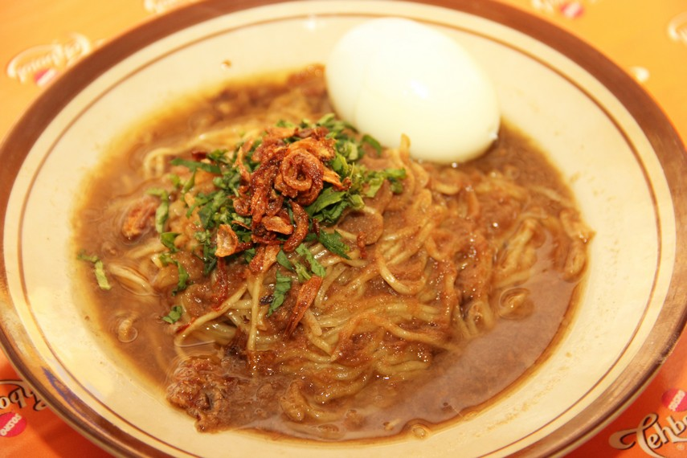

Mie Koba Bangka Belitung
Banyak kuliner yang dapat kita cicipi di Provinsi Bangka Belitung. Salah satunya adalah Mie Koba. Mie yang namanya diambil dari salah satu Kabupaten di Bangka Tengah ini menawarkan rasa yang nikmat dan gurih dengan kuah ikan yang khas. Satu porsi mie Koba berisi mie, telur, taoge, seledri, dan bawang goreng. Semua bahan tersebut kemudian disiram dengan kuah yang dibuat dari ikan. Penasaran dengan cara membuatnya? Mari kita simak.
Bahan - bahan
- 400 gram mi kering
- 250 gram ikan tenggiri
- 200 gram tahu
- 100 gram taoge
- 1 liter air
- 5 batang seledri
- 2 cm jahe bakar
- 2 batang serai, ambil putihnya dan memarkan
- 1 sendok makan kecap asin
- 1 sendok teh cuka makan
- 1/2 sendok teh merica bubuk
- 1/2 sendok teh penyedap rasa
- 1/2 sendok teh gula
- 1,5 sendok teh garam
Bumbu halus
- 7 buah bawang merah
- 5 siung bawang putih
- pala seujung sendok teh, sedikit saja
Cara Membuat
- Siapkan komponen utama dari mi kuah ikan, yaitu mi, toge, dan tahu. Rebus mi hingga lembut, tiriskan. Rendam taoge di dalam air panas sebentar, tiriskan. Goreng tahu hingga kering kulitnya, tiriskan.
- Untuk kuah ikan, rebus ikan sampai matang dan keluar kaldunya, angkat ikannya dan sisihkan. Agar rasanya lebih pekat, haluskan daging ikan dan sisihkan.
- Tumis bumbu halus dan tambahkan serai yang sudah dimemarkan. Tumis hingga wangi. Masukkan bumbu halus ke dalam kaldu ikan yang telah disiapkan tadi. Tambahkan gula, garam, penyedap rasa, merica bubuk, dan daging ikan yang telah dihaluskan. Aduk dan koreksi rasa.
- Jika semua komponen sudah matang, saatnya meracik mie kuah ikan. Siapkan mangkuk, isi dengan mi, tahu, taogem dan seledri. Siram dengan kuah ikan, lalu taburi bawang goreng di atasnya